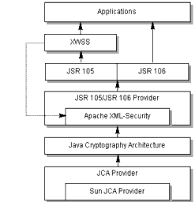

FAQ
History
Search
Feedback
|
Download
FAQ History |
|
API
Search Feedback |
XML Security Stack
Figure 4-1 shows how the XML Digital Signature API (JSR 105) interacts with other security components today, including JSR 106 (XML Digital Encryption APIs), and how it will interact in future releases.

Figure 4-1 Java WSDP Security Components
XWSS calls Apache XML-Security directly today; in future releases, it should be able to call other pluggable security providers. The Apache XML-Security provider and the Sun JCA Provider are both pluggable components. The JSR 105/JSR 106 layer will be standard after the two JSRs become final.
|
Download
FAQ History |
|
API
Search Feedback |
All of the material in The Java(TM) Web Services Tutorial is copyright-protected and may not be published in other works without express written permission from Sun Microsystems.